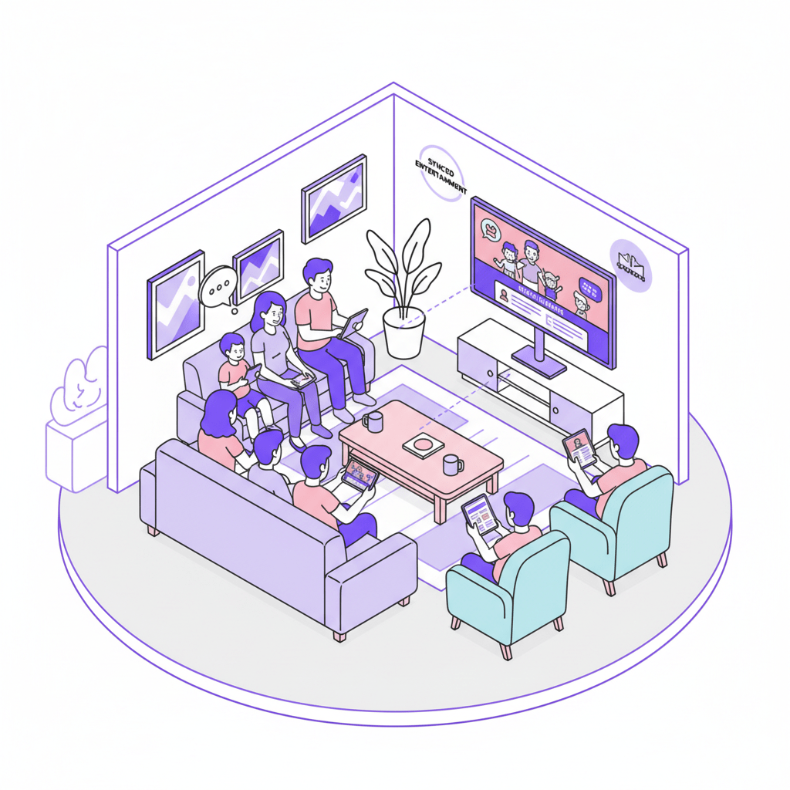
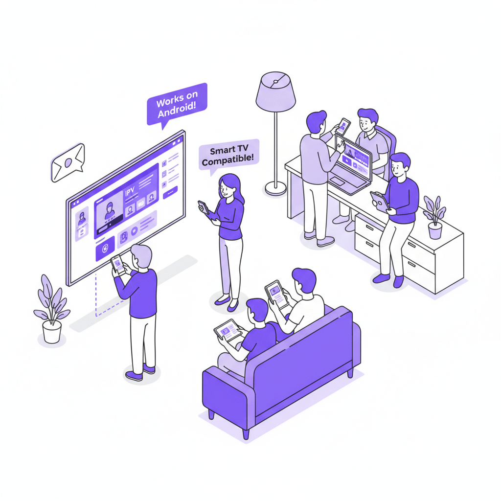
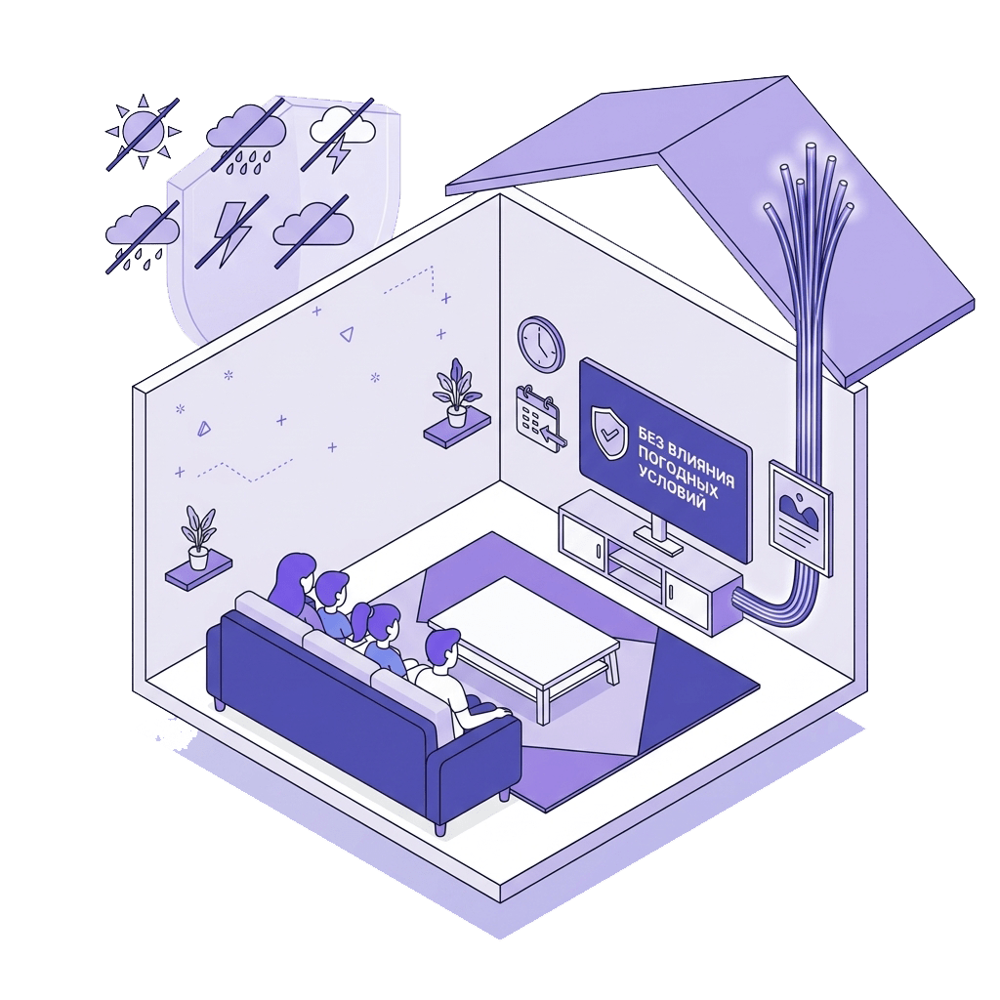
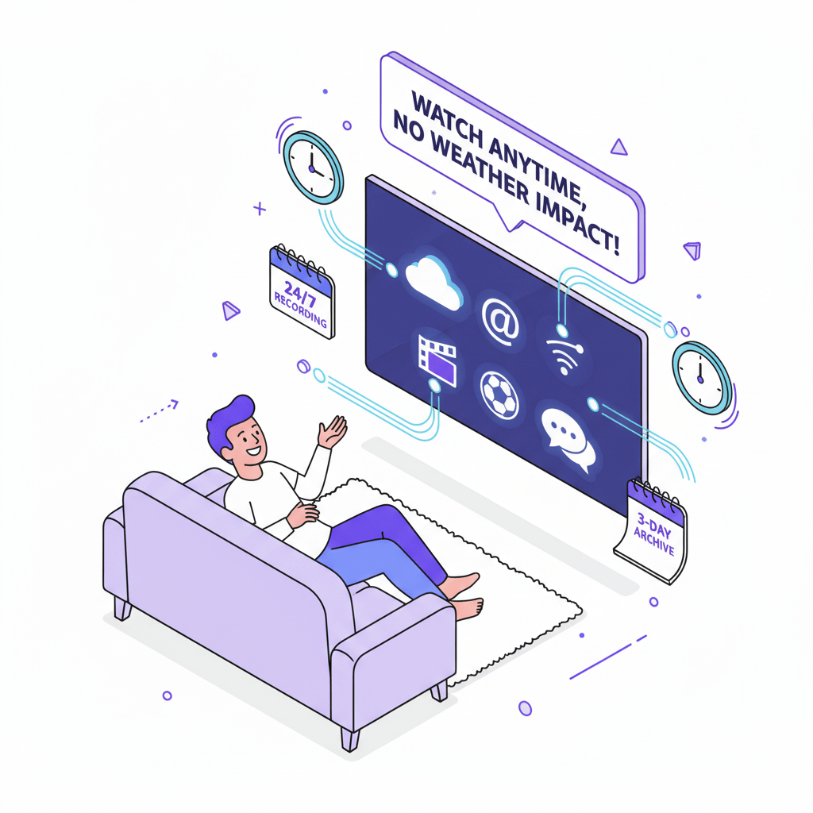
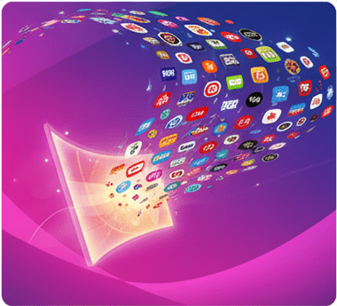
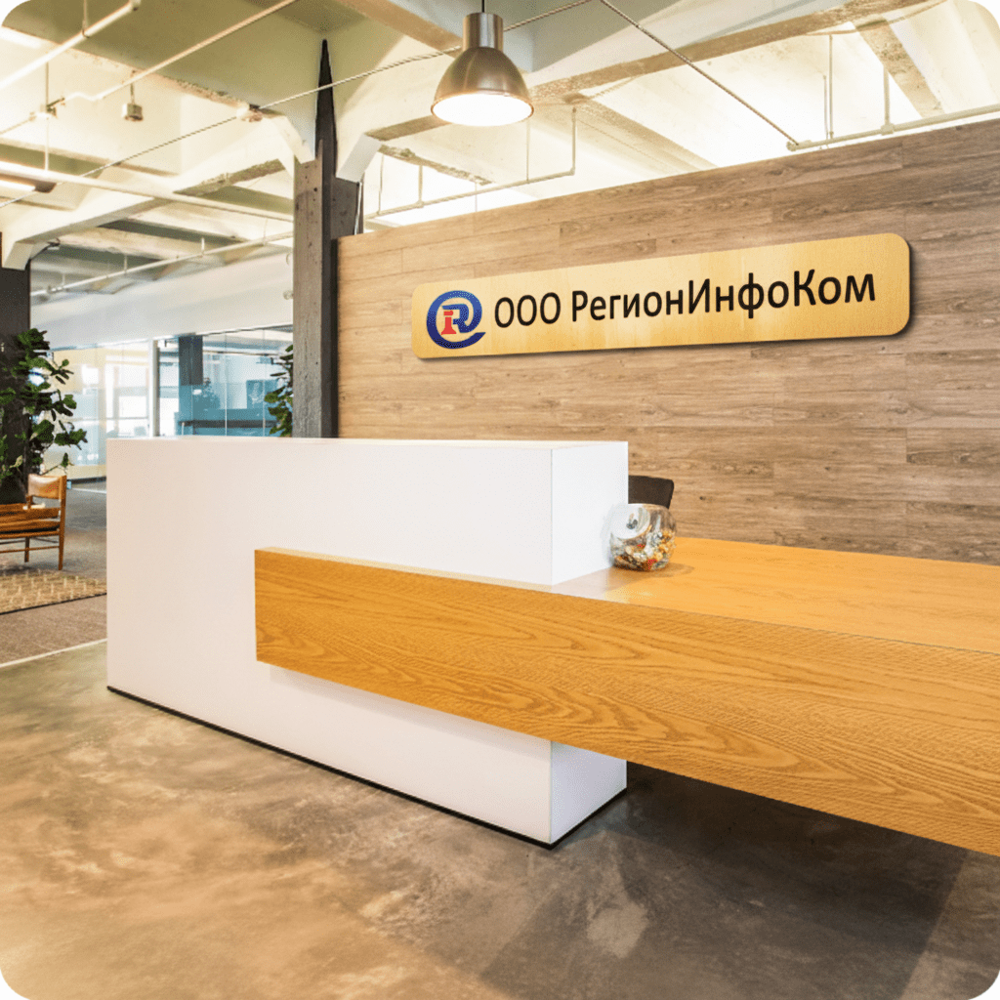

Тарифы
Тарифные планы для частного сектораАбсолют
Cкорость 70 Мбит/с 800 ₽/мес.
Интернет-100
Cкорость 100 Мбит/с 900 ₽/мес.
Интернет-300
Cкорость 300 Мбит/с 1200 ₽/мес.
Интернет-500+
Cкорость 500 Мбит/с 1300 ₽/мес.
Интернет-1000+
Cкорость 1000 Мбит/с 1400 ₽/мес.
Дополнительные предолжения
Телевидение
177 каналов (на 3 устройства)155 ₽/мес.
Приостановка действия договора
Аренда порта200 ₽/мес.
Статический ip адрес
Статический ip адрес 300 ₽/мес.
Способ оплаты
Cбербанк Онлайн
Так же Вы можете у нас приобрести
Видеокамера

Поддержка функции обнаружения движения и сигнала тревоги Поддержка беспроводного (Wifi) и проводного режима Поддержка двустороннего аудио разговора в режиме реального времени Поддержка панорамирования 360 градусов/наклон 55 градусов Поддержка TF карты макс. до 256 ГБ (приобретается абонентом самостоятельно) Удаленный просмотр через приложение
Стоимость камеры3500 ₽
Роутер TP-LINK

Беспроводной гигабитный маршрутизатор с оригинальным дизайном и четырьмя мощными антеннами. Поддерживает стандарт 802.11ac, обеспечивает стабильное соединение и широкое покрытие. Частоты Wi-Fi: 2.4 ГГц, 5 ГГц Подключение к интернету (WAN)Ethernet RJ-45, SFP Скорость Ethernet 1 Гбит/с, 100 Мбит/с Количество LAN-портов 4 Макс. скорость беспроводного соединения 867 Мбит/с
Стоимость 6200 ₽
BAZIS Telecom

Маршрутизатор оснащен гигабитными портами для проводного подключения, поддерживает IPv6, PPPoE, а также функции фильтрации по IP и MAC-адресам что делает его надежным выбором как для дома, так и для офиса. Частоты Wi-Fi: 2.4 ГГц, 5 ГГц Скорость Ethernet 1 Гбит/с Количество LAN-портов 4
Стоимость 4000 ₽
Интернет для бизнеса
Преимущества ВОЛС
- Высокая пропускная способность (до 1000 Мбит/с)
- Симметричность скорости передачи данных (т.е. показатели входящей и исходящей скорости примерно равны)
- Высокая устойчивость к внешним повреждениям и абсолютная нечувствительность к электромагнитным помехам и шумам.
- Высокая степень защищённости от несанкционированного доступа ( т.е. от перехвата информации)
- Высокая надёжность и долговечность сети: оптические волокна не подвержены окислению, слабому электромагнитному воздействию и разрушению под действием влаги.), которые позволяют обеспечить стабильно высокую скорость (до 1000 Мбит/с) и надежность передачи данных.
Техническая поддержка
Нашим абонентам обеспечена возможность прямой связи со специалистами технической поддержки. Они доступны по прямому городскому номеру. Сотрудники тех. поддержки, в свою очередь, своевременно получают и передают всю оперативную информацию о происходящем специалистам, непосредственно работающим с сетями и оборудованием. Такой подход обеспечивает высокую эффективность решения возникающих проблем и запросов.
Повышенная надёжность и стабильность связи
- РегионИнфоКом использует в Ростове-на-Дону только собственные сети, а не арендуемые, и полностью их контролирует
- Сети не перегружены трафиком (максимальная загрузка сети – не более 60%)
- Сетевые кабели размещены в основном в подземной инфраструктуре (в телефонной канализации).
- На случай возникновения перебоев с электроснабжением (на узлах связи) используются источники бесперебойного питания.
- Надежность связи, кроме прочего, обеспечивается наличием резервных магистральных каналов.
О компании
Мы работаем только в Ростове-на-Дону и области. Благодаря этому поддерживаем качество и стабильность.
Работаем с физическими и юридическими лицами
Мы подключаем к высокоскоростному интернету дома, офисы, магазины и предприятия — от частных клиентов до госорганизаций. Уже более 80 населённых пунктов, коттеджных посёлков и СНТ выбрали нас. Наш принцип — внимание к каждому.

Высококвалифицированные специалисты
Кадровый состав компании РегионИнфоКом сформирован из специалистов, имеющих обширные партнерские связи и богатый опыт работы в соответствующих направлениях деятельности на рынке нашего города.

Индивидуальный подход
В организации мы строим работу на открытой и честной коммуникации — как внутри компании, так и с клиентами и партнёрами. Никакой лишней волокиты, бюрократии или географических ограничений. Благодаря такой среде все процессы проходят быстро и слаженно, а каждый заказчик получает индивидуальный подход и гибкое решение своих задач.

Монтаж
Бережно монтируем кабель, без повреждений интерьера вашей квартиры или дома.

Скорость
Благодаря технологии GPON и резервной линии, гарантируем скорость прямо по договору.

Поддержка
Круглосуточная помощь по горячей линии, даже в праздничные дни.
населенных пунктов
Телевиденье
Почему наше ТВ интереснее
Просмотрт ТВ с нескольких устройств одновременно

Теперь каждый член семьи и гости Вашего загородного дома могут одновременно смотреть то, что им нравится с разных устройств – с телевизоров, планшетов и даже телефонов на трех устройствах за одну абонентскую плату.
Работает на любом ANDROID или IOS устройстве

Для работы нашего IPTV достаточно любого гаджета – вашего планшета или сматфона. Приложение доступно на любых устройствах iOS, смартфонах и планшетах Android, а также Smart TV.
Без влияния погодных условий

Наше телевидение работает через оптоволоконный интернет — погода больше не помешает просмотру. Пропустили передачу, фильм или матч? Воспользуйтесь функцией отложенного просмотра: все каналы записываются 24/7, архив доступен за 3 дня.
Беспредельно большой выбор каналов

Теперь Вы сможете смотреть больше любимых каналов и подключать дополнительные пакеты.
Тарифный план
Базовый
177 каналов 250 руб./мес.
Доступ до 5 устройств
89 руб./мес.
Что необходимо, чтобы подключить телевиденье?
Установите на Ваши устройства приложение Кубтел ТВ (в рамках любого выбранного тарифного плана доступно на трёх устройствах просмотра, кроме операционной системы Windows).
Вакансии
Мы предлагаем различные вакансии, которые подойдут как студентам без опыта так и имеющим опыт работы. В нашей компании Вы сможете набраться опыта и получить реальную возможность карьерного роста.
Условия оформления: согласно ТК после успешно пройденного испытательного периода. График работы 5/2 с 8.00-17.00
Требуются специалисты
- Инженер оборудования систем мониторинга
- Монтажник систем видеонаблюдения
- Специалист абонентского отдела
- Монтажник-Сварщик технического отдела
- Менеджер в отдел продаж
Документы
Реквизиты
ООО «РегионИнфоКом»
344038, г. Ростов-на-Дону,
пр. М. Нагибина, 14а, офис 548в
ИНН 6165142079 КПП 616101001
Р/с 40702810252000001789
Юго-Западный банк ПАО «Сбербанк России»
к/с 30101810600000000602
БИК 046015602
- Уведомление о реорганизации
- Уведомление о повышении абонентской платы
- Лицензия «Телематические услуги»
- Лицензия «Предоставление каналов связи»
- Лицензия «Передача данных»
- Политика в отношении обработки персональных данных
- Заключение по результатам оценки условий труда
- Правила оказания услуг связи ООО «РегионИнфоКом» физическим лицам
- Приложение №1 к правилам оказания услуг связи. Схема разграничения зон ответсвенности сторон
- Приложение №2 к правилам оказания услуг связи. Схема разграничения зон балансовой принадлежности сторон
- Заявление на возобновление договора
- Заявление на предоставление IP-адреса
- Заявление на отключение IP-адреса
- Заявление на расторжение договора
- Заявление на смену тарифного плана
- Акт ремонтно-восстановительных работ
- Заявление на приостановление договора с арендой порта
Контакты
- АдресООО «РегионИнфоКом» 344038,
г. Ростов-на-Дону,
пр. М. Нагибина, 14а, офис 548в - Телефоны
- Сообществоhttp://vk.ru/ric
Наша группа ВКонтакте
- ГрафикПонедельник – Четверг 08:00 - 17:00
Пятница 08:00 - 16:00
Суббота, Воскресенье — выходной перерыв с 12:00 до 12:45
